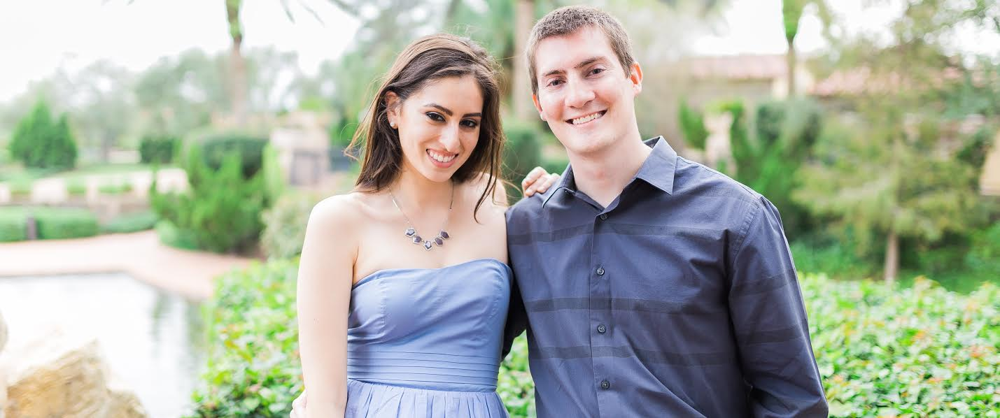
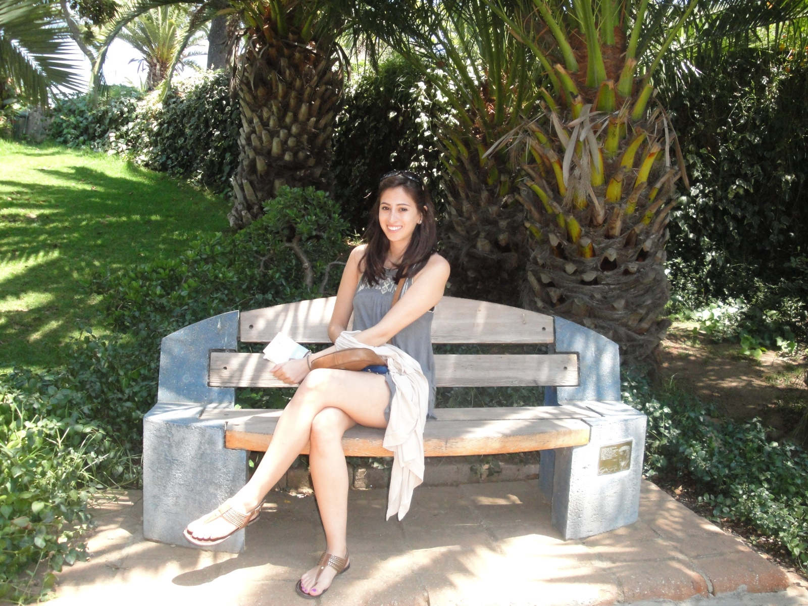

<link rel="import" href="bower_components/polymer/polymer.html">
<link rel="import" href="bower_components/paper-card/paper-card.html">
<link rel="import" href="bower_components/paper-button/paper-button.html">
<link rel="import" href="bower_components/paper-tabs/paper-tabs.html">
<link rel="import" href="bower_components/iron-flex-layout/iron-flex-layout.html">
<link rel="import" href="bower_components/iron-image/iron-image.html">
<link rel="import" href="bower_components/iron-pages/iron-pages.html">
<link rel="import" href="bower_components/my-countdown/my-countdown.html">
<link rel="import" href="bower_components/wedding-map/wedding-map.html">
<script src="bower_components/moment/moment.js"></script>

<!--
A wedding website.

##### Examples

    <wedding-polymer></wedding-polymer>

@demo
@element wedding-polymer
@author Eric Leichtenschlag

### Based off of http://Granze.github.io/flip-clock
-->

<dom-module id="wedding-polymer">
    <style>

    :host {
      font-family: PT_Serif;
    }

    h2 {
      font-size: 20px;
    }

    .stuff {
      width: 960px;
      background-image: url("images/background-white-0.75.png");
      display: table-cell;
    }

    .morestuff {
      display: table;
      margin: auto;
    }

    paper-tabs.transparent-teal {
      background-color: transparent;
      font-size: 20px;
      font-weight: bold;
      color: #660066;
    }

    .table-cell {
      display: table-cell;
    }

    .lace-left {
      background-image: url("images/lace-left.png");
      background-repeat: repeat-y;
      min-width: 23px; /* update if width changes. */
    }

    .lace-right {
      background-image: url("images/lace-right.png");
      background-repeat: repeat-y;
      min-width: 23px; /* update if width changes. */
    }

    iron-pages {
      /* height: 1000px; */
      margin-top: 10px;
      margin-left: 30px;
      margin-right: 30px;
    }

    paper-tabs {
      --paper-tabs-selection-bar-color: #660066;
    }

    paper-tab {
      --paper-tab-ink: #660066;
    }

    .centerme {
      display: block;
      margin-left: auto;
      margin-right: auto;
    }

    @font-face {
      font-family: Edwardian;
      src: url('fonts/Edwardian_Script_ITC.otf');
    }

    @font-face {
      font-family: PT_Serif;
      src: url('fonts/PT_Serif.ttf');
    }

    .home-intro {
      margin-bottom: 10px;
      padding: 10px;
      font-size: 20px;
      text-align: justify;
    }

    .about {
       @apply(--layout-horizontal);
       @apply(--layout-start);

    }

    .about-card {
      width: 45%;
      margin-left: auto;
      margin-right: auto;
      margin-bottom: 16px;
    }

    .about-card-name {
      --paper-card-header-color: var(--paper-purple-500);
      font-size: 24px;
      text-align: center;
      padding-bottom: 10px;
    }

    .about-card paper-card {
      width: 100%;
      padding-left: 10px;
      padding-right: 10px;
      box-sizing: border-box;
      margin-bottom: 10px; 
    }

    .sized {
      display: block;
      max-width: 100%;
      max-height: 300px;
      margin-left: auto;
      margin-right: auto;
      box-sizing: border-box;
    }

    .gallery {
      margin: 5px;
      width: 45%;
      max-height: 500px;
    }

    /*
      https://css-tricks.com/snippets/css/a-guide-to-flexbox/
      https://elements.polymer-project.org/guides/flex-layout

      Polymer flex classes:
      flex
      layout (req'd for horizontal or vertical)
      horizontal or vertical
      center or start
      etc.

      Classes don't seem to work. Use mixins instead.
    */
  </style>
  <template>
    <div class="morestuff">
      <div class="table-cell lace-left"></div>

      <div class="stuff">
        

        <paper-tabs class="transparent-teal" selected="0" align-bottom style="margin-bottom: 1px">
          <paper-tab>HOME</paper-tab>
          <paper-tab>OUR STORY</paper-tab>
          <paper-tab>GALLERY</paper-tab>
          <paper-tab>WEDDING DETAILS</paper-tab>
          <paper-tab>REGISTRY</paper-tab>
        </paper-tabs>

        <iron-pages selected="0">
          <div> <!-- Home -->
            <paper-card elevation="3" style="margin-bottom: 10px">
              
            </paper-card>
            <paper-card elevation="3" class="home-intro">
              <p>
                Welcome to our wedding website! We are looking forward to celebrating our big day
                with <b>YOU</b> -- our friends and family! April 8th, 2016 will be a day that we forever
                hold in our hearts, so we hope you are able to make it and share in the love!
              </p>
              <p>
                You can find information relating to our upcoming wedding celebration on this site.
                Use the tabs above to explore hotel accommodations, registry information, and more.
                This website was built using our combined creative talents, so we hope you enjoy!
              </p>
            </paper-card>

          </div>
          <div class="about"> <!-- Our story -->
            <div class="about-card">
              <!--<paper-card elevation="3" >
                Nicole Smith
              </paper-card>-->
              <paper-card heading="Nicole Smith" elevation="3" class="about-card-name">
                </img>
              </paper-card>
              <paper-card elevation="3">
                <h2>HOW WE MET</h2>
                <p>
                  It was my freshmen year at the University of Florida. I didn't know too many
                  people, just a few new kids I had met in my classes and a handful of old high
                  school friends that had also started at UF that year. I started hanging out with
                  my friend Winnie a lot--she had a brother, Billy, that lived in the same dorm
                  building as I, and it became very easy to frequently meet up!
                </p>
                <p>
                  One day, Winnie invited me to play ultimate frisbee with Billy and his roommates.
                  I thought to myself "Sure! A new sport and some new people!" Among those
                  roommates was Eric, and I quickly noticed how cute and athletic he was. After
                  that day, I spent a lot of time with Winnie, Billy, Eric, and their other
                  roommate Rivy. We watched movies, ate dinner together, and played card games.
                  At one point, Eric asked if he could join my workouts at the Swamp stadium.
                  Later, Eric began waiting for me after my morning class and we would walk back
                  to our dorm building together. I loved spending time with him and started to
                  develop a crush. As the holidays approached, Eric sent me an adorable bumper
                  sticker on Facebook telling me that he liked me. He asked me out on an official
                  date a few days later and the love story began!
                </p>
              </paper-card>
              <paper-card elevation="3">
                <h2>THE EARLY DAYS</h2>
                <p>
                  Since we lived in the same building, I saw Eric every day. We worked out together,
                  ate our meals together, and Eric would even help me with homework if I was stuck!
                  We started cooking breakfast every Sunday and would invite our friends to eat with
                  us. Eric would make french toast and bacon and I would make home fries. To this
                  day, Eric and I cook breakfast together at least once each weekend.
                </p>
              </paper-card>
              <paper-card elevation="3">
                <h2>DEFEATING LONG DISTANCE</h2>
                <p>
                  At the end of Eric's senior year, he received a job offer from Google located in
                  Mountain View, California. I was heartbroken thinking that our relationship might
                  soon end, but Eric promised to call every day and visit me every few months.
                  Eric kept his promise and then some... we talked twice a day,
                  every day during the year and half that we were separated. We took turns visiting
                  each other--Eric coming down for holidays and I going to California during the
                  summer and spring break. The distance was starting to take its toll, however, so
                  one day I told Eric that I would find a job in San Francisco so we may have some
                  real time together again. I found an internship with Arup the summer of 2013, and
                  packed my bags for the west coast. I was nervous that despite our constant
                  communication, Eric and I might have grown apart in some way, but my fears were
                  misplaced and we quickly fell right back into our old swing.
                </p>
              </paper-card>
              <paper-card elevation="3">
                <h2>THE PROPOSAL</h2>
                <p>
                  I said yes!!! I had just graduated from UF and was home for the holidays. In a
                  few short months I would be permanently relocating to the Bay Area. Eric came
                  over Christmas morning to open presents with my family. My dad handed Eric the
                  last present saying "Here Eric, we got you something else too." I thought I already
                  knew everything that my parents had bought for Eric but I figured that I must have
                  missed this one. Eric opened the present and then looked at me. He said "Actually,
                  this present is not for me, its for you." He opened the box, which contained a ring
                  box and I couldn't believe it! He got down on one knee and proposed. I honestly
                  only remember half of what he said, I was so shocked. I said yes and started crying
                  immediately. It was the perfect proposal. I was so happy that Eric knew to share
                  this moment with my family. It is a day and feeling that I will never forget.
                </p>
              </paper-card>
            </div>
            <div class="about-card">
               <paper-card heading="Eric Leichtenschlag" elevation="3" class="about-card-name">
                </img>
              </paper-card>
              <paper-card elevation="3">
                <h2>HOW WE MET</h2>
                <p>
                  It was Fall 2009; I just started my junior year at the University of Florida,
                  when I met Nicole during a game of Ultimate Frisbee. I thought she was cute, and
                  made sure she was on my team that day. She continued to hang out with me and
                  group of friends, watching movies in the dorms, running in the Swamp, and attending
                  <a href="https://www.union.ufl.edu/ProgramsArtsLeisure/GatorNights">Gator Nights</a>.
                  Every time I saw her it made me smile.
                </p>
                <p>
                  We used to exchange bumper stickers on Facebook, and if you accepted the sticker it
                  went on your wall. On Christmas, I sent her a bumper sticker that said something like
                  "The only present I want for Christmas is you". And she accepted it! The rest is
                  history...
                </p>
              </paper-card>
              <paper-card elevation="3">
                <h2>THE EARLY DAYS</h2>
                <p>
                  We became Facebook official shortly later, on January 9th, 2010. During the beginning
                  of our relationship, we spent almost all of our time together. We loved to eat at
                  local restaurants, and would have frequent movie nights at my dorm.
                </p>
                <p>
                  On our first Valentine's Day, we took a bus to get dinner at
                  <a href="http://www.bentocafesushi.com/">Bento Cafe</a>, saw a movie at the theater, and
                  by that time the bus wasn't running anymore! With no Uber back then, we walked the 2+
                  miles back to the dorm, but not before we picked up a midnight pizza! Ah, good times...
                </p>
              </paper-card>
              <paper-card elevation="3">
                <h2>DEFEATING LONG DISTANCE</h2>
                <p>
                  After graduating from UF, I accepted a engineering position at Google in Mountain View,
                  CA. I had a few other offers including one just an hour away from UF, but there was no
                  chance I was going to give up Google.
                </p>
                <p>Nicole still has another 2 and a half years of school left. It was difficult going
                  from seeing each other every day to seeing each other only every few months; the period
                  between July 4th and Thanksgiving was always the toughest since there aren't any long
                  holidays in that period (we had to survive 3 of these).
                <p>
                  Some doubted we could survive the distance. We heard stories of several friends
                  who had failed long distance relationships. We had our fair share of stupid fights
                  that were based on frustration due to us being apart so long. But we survived it all,
                  and our relationship is stronger because of it.
                </p>
              </paper-card>
              <paper-card elevation="3">
                <h2>THE PROPOSAL</h2>
                <p>
                  I bought the ring in September of 2014 and was thinking about when and how to
                  propose. I knew it had to happen during the holidays since we were still long
                  distance at the time. I also knew she would be most comfortable in front of her
                  family. So I had the idea of proposing on Christmas Day using the ring as a gift
                  but with a twist - the ring addressed to me from Nicole's parents! I thought this
                  was a nice way to ensure I had approval from her parents, whom I had to trust
                  with the ring for a few weeks! 
                </p>
                <p>
                  I was nervous leading up to Christmas Day. It had been almost 3 months in the making,
                  and Nicole's entire family had seen the ring and knew about the plan when I handed
                  over the ring during Nicole's college graduation a few weeks prior. I was worried
                  that her sisters might spill the beans, and it was out of my control. I didn't know
                  what I was going to say. We exchanged presents at Nicole's house, and the ring was
                  the last present of the day.
                <p>
                  As I unwrapped the paper and opened the box, I remember saying "Nicole, this present
                  is really for you". She just sat on the ground, simply stunned. I then had to ask
                  "Hey weirdo, are you going to stand up so I can propose to you?" I don't remember
                  what my proposal speech was (I ended up winging it), but the important thing is
                  that she said YES!
                </p>
              </paper-card>
            </div>
          </div>
          <div> <!-- Gallery -->
            </img>
            </img>
            </img>
            </img>
          </div>
          <div> <!-- Accommodations -->
            <h1>Page 4</h1>
            <wedding-map></wedding-map>
          </div>
          <div> <!-- Registry -->
            The wedding ceremony starts in:
            <my-countdown style="text-align: center"></my-countdown></div>
        </iron-pages>
      </div>

      <div class="table-cell lace-right"></div>
    </div>
  </template>
</dom-module>

<script>
  console.log("test");
  Polymer({
    is: 'wedding-polymer',
    ready: function() {
      console.log("ready");
      var tabs = document.querySelector('paper-tabs');
      var pages = document.querySelector('iron-pages');

      tabs.addEventListener('iron-select', function() {
        pages.selected = tabs.selected;
      });
    }
  });
</script>
